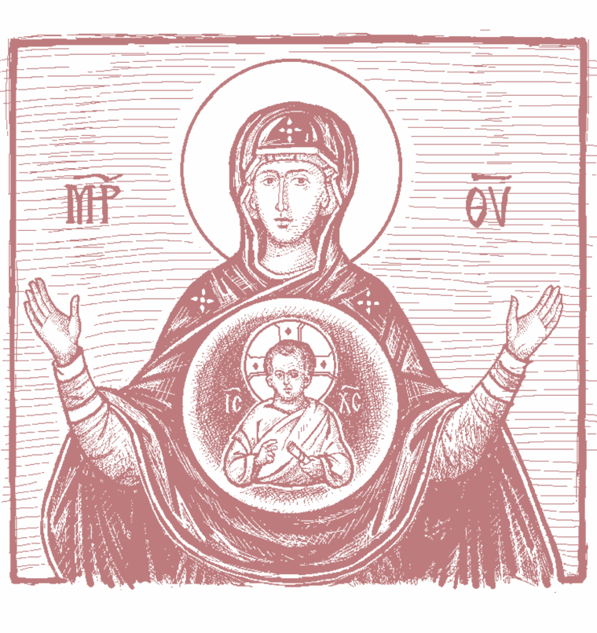
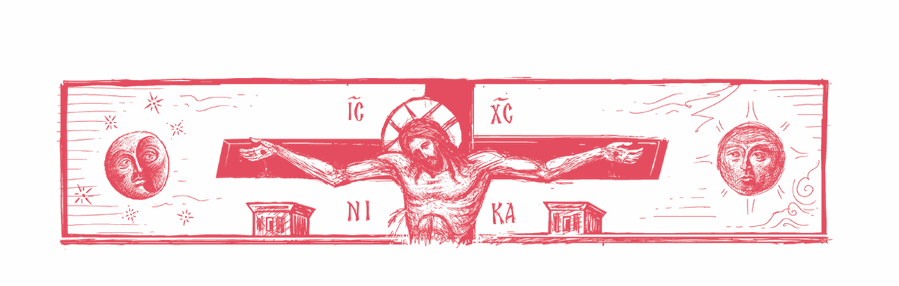

PRAYERS for MORNING,
DAY & NIGHT
These prayers are excerpted from Orthodox Christian Prayers, edited by Priest John Mikitish & Hieromonk Herman (Majkrzak) (South Canaan, Penn.: St. Tikhon’s Monastery Press, 2019). © 2019 St. Tikhon’s Monastery Press. All rights reserved. Permission is granted for this document to be made available on www.oca.org, for those who wish to use these prayers in their homes.
Morning Prayers
Upon rising from sleep:
In the Name of the Father and
of the Son and of the Holy Spirit. Amen.
After standing a little while in silence, waiting till all the
senses are calm, one may make three prostrations, saying:
Lord Jesus Christ, Son of God,
have mercy on me, a sinner!
And then the following:
THROUGH the prayers of our holy fathers, O Lord Jesus Christ our God, have mercy on us. Amen.
Glory to thee, our God, glory to thee.
O heavenly King, the Comforter, the Spirit of truth, who art everywhere present and fillest all things, Treasury of blessings, and Giver of life: come and abide in us, and cleanse us from every impurity, and save our souls, O Good One.
Holy God, Holy Mighty, Holy Immortal: have mercy on us. (thrice)
Glory to the Father and to the Son and to the Holy Spirit, now and ever and unto ages of ages. Amen.
O Most Holy Trinity, have mercy on us. Lord, cleanse us from our sins. Master, pardon our transgressions. Holy One, visit and heal our infirmities, for thy Name’s sake.
Lord, have mercy. (thrice)
Glory to the Father and to the Son and to the Holy Spirit, now and ever and unto ages of ages. Amen.
Our Father, who art in heaven, hallowed be thy Name. Thy kingdom come. Thy will be done on earth as it is in heaven. Give us this day our daily bread; and forgive us our trespasses, as we forgive those who trespass against us; and lead us not into temptation, but deliver us from the evil one.
And these troparia:
Rising from sleep we fall down before thee, O Good One, and with the angels’ song we cry to thee, All-powerful: Holy, Holy, Holy art thou, O God: through the Theotokos, have mercy on us.
Glory to the Father…
O Lord, who hast raised me from bed and from sleep, enlighten my mind and heart, and open my lips that I may sing of thee, O Holy Trinity: Holy, Holy, Holy art thou, O God: through the Theotokos, have mercy on us.
Now and ever…
The Judge shall come suddenly, and the deeds of each shall be exposed. But at midnight we cry out with fear: Holy, Holy, Holy art thou, O God: through the Theotokos, have mercy on us.
Lord, have mercy. (twelve times)
Rising from sleep, I thank thee, O Holy Trinity. For, in the abundance of thy goodness and patience, thou hast not been angry with me, idler and sinner though I be, nor hast thou destroyed me together with my iniquities; but thou hast shown thy usual love for mankind, and hast raised me up as I lay helpless, that I might rise early and glorify thy dominion. Enlighten now the eyes of my mind and open my lips that I may study thy words, and come to understand thy commandments, and accomplish thy will, and hymn thee in heartfelt confession, and praise thine all-holy Name, of the Father and of the Son and of the Holy Spirit, now and ever and unto ages of ages. Amen.
Come, let us worship God our King.
Come, let us worship and fall down before Christ, our King and our God.
Come, let us worship and fall down before Christ himself, our King and our God.
Psalm 50
Have mercy on me, O God, according to thy great mercy, and according to the multitude of thy compassions blot out my transgression. Wash me thoroughly from my iniquity, and cleanse me from my sin.
For I know my iniquity, and my sin is continually before me. Against thee only have I sinned, and done what is evil before thee, that thou mightest be justified in thy words, and prevail when thou art judged. For, behold, I was conceived in iniquities, and in sins did my mother bear me. For, behold, thou hast loved truth, the unknown and hidden things of thy wisdom hast thou made known unto me.
Thou shalt sprinkle me with hyssop, and I shall be cleansed; thou shalt wash me, and I shall be made whiter than snow. Thou shalt cause me to hear joy and gladness, the bones that have been humbled shall rejoice. Turn thy face away from my sins, and blot out all my iniquities. Create in me a clean heart, O God, and renew a right spirit within me. Cast me not away from thy presence, and take not thy Holy Spirit from me. Restore unto me the joy of thy salvation, and establish me with a ruling spirit. I will teach transgressors thy ways, and the ungodly shall return to thee. Deliver me from blood-guiltiness, O God, thou God of my salvation, and my tongue shall rejoice in thy righteousness.
O Lord, thou shalt open my lips, and my mouth shall declare thy praise. For if thou hadst desired sacrifice, I would have given it; thou wilt not be pleased with whole-burnt offerings. A sacrifice to God is a broken spirit, a broken and humbled heart God will not despise.
Do good, O Lord, in thy good pleasure unto Zion, and let the walls of Jerusalem be built. Then shalt thou be pleased with a sacrifice of righteousness, with oblation and whole-burnt offerings. Then shall they offer bullocks upon thine altar.
The Symbol of Faith
I believe in one God, the Father Almighty, Maker of heaven and earth, and of all things visible and invisible. And in one Lord Jesus Christ, the Son of God, the Only-begotten, begotten of the Father before all ages; Light of Light, true God of true God; begotten, not made; of one essence with the Father; by whom all things were made; who for us men and for our salvation came down from heaven, and was incarnate of the Holy Spirit and the Virgin Mary, and became man; and he was crucified for us under Pontius Pilate, and suffered, and was buried; and the third day he rose again, according to the Scriptures, and ascended into heaven, and sits at the right hand of the Father; and he shall come again with glory to judge the living and the dead; whose kingdom shall have no end.
And in the Holy Spirit, the Lord, the Giver of life, who proceeds from the Father; who with the Father and the Son together is worshipped and glorified; who spoke by the prophets. In One, Holy, Catholic, and Apostolic Church. I acknowledge one baptism for the remission of sins. I look for the resurrection of the dead, and the life of the world to come. Amen.
First Prayer
by Saint Macarius the Great
O God, cleanse me, a sinner, even though I have done nothing good before thee: yet deliver me from the evil one, and let thy will be done in me, that I may open my unworthy lips without condemnation and praise thy holy Name, of the Father and of the Son and of the Holy Spirit, now and ever and unto ages of ages. Amen.
second Prayer: by the same
Rising from sleep, I offer thee a midnight song, O Sav- ior. I fall down and cry out to thee: let me not fall asleep in the death of sin, but be gracious to me, O thou who wast voluntarily crucified; and raise me quickly, for I lie in laziness, and save me as I stand at prayer; after the night’s sleep, O Christ my God, shine upon me a sinless day and save me.
third Prayer: by the same
Rising from sleep, I run to thee, O Master who lovest mankind; thy loving-kindness rouses me to do thy work. I pray thee: help me at all times and in all things, and deliver me from every evil of this world and from the meddling of the devil; save me and lead me into thine eternal kingdom. For thou art my Creator, the providential Giver of every good. All my hope is in thee, and to thee I give the glory, now and ever and unto ages of ages.
fourth Prayer: by the same
O Lord, in thine abundant goodness and great compassion thou hast granted me, thy servant, to pass the night unassailed by any evil of the enemy. O Master and Creator of all, by thy true light make me worthy to accomplish thy will with an illumined heart, now and ever and unto ages of ages. Amen.
fifth Prayer: by the same
O Lord, God Almighty, who dost accept the thrice-holy hymn from thy heavenly hosts: accept from me, thine unworthy servant, this song at the rising of the sun. Grant that at every season and hour of my life I may glorify thee, the Father and the Son and the Holy Spirit, now and ever and unto ages of ages. Amen.
sixth Prayer
by Saint Basil the Great
O Lord Almighty, God of powers and of all flesh, who livest on high yet takest care for things below, who triest hearts and reins and clearly foreknowest the secrets of men: thou art the Light without beginning, who ever art, in whom there is neither variation nor shadow of change. O King immortal, accept the prayers which we, trusting in the multitude of thy compassions, now offer thee from defiled lips. Forgive all the iniquities we have committed in deed or word or thought, in knowledge or in ignorance. Cleanse us from all defilement of flesh and spirit. Grant us to pass through the entire night of this present life with wakeful heart and sober mind, awaiting the coming of the radiant day of the appearing of thine Only-begotten Son, our Lord and God and Savior Jesus Christ, when the Judge of all shall come with glory to reward each according to his deeds. May we not be found fallen and idle, but alert and roused to action, prepared to enter into his joy and the divine bridal chamber of his glory, where the voice of those who feast is unceasing, and the sweetness of those who behold the ineffable beauty of thy countenance is beyond telling. For thou art the true Light that enlightens and sanctifies all things, and all creation doth extol thee in song, unto ages of ages. Amen.
seventh Prayer: by the same
We bless thee, O God Most High and Lord of mercies, who ever doest among us great and unsearchable things, glorious and extraordinary, which cannot be numbered, who grantest to us sleep for rest from our infirmities and repose from the burdens of our much-toiling flesh. We thank thee that thou hast not destroyed us with our sins but hast loved us as always, and though we are sunk in despair, thou hast raised us up to glorify thy might. Therefore, we implore thine incomparable goodness to enlighten the eyes of our understanding and to raise up our minds from the heavy sleep of indolence: open our mouth and fill it with thy praise, that we may be able undistracted to sing and chant and confess unto thee, who art God, glorified in all and by all, the Father without beginning, together with thine Only-begotten Son, and thine all-holy, good, and life-giving Spirit, now and ever and unto ages of ages. Amen.
eighth Prayer
A Midnight Song to the Theotokos
I sing thy grace, O Lady, and beseech thee: grant grace to my mind. Teach me to walk aright on the path of Christ’s commandments. Strengthen me to keep watch with song, dispelling the torpor of sleep. I am bound by fetters of sin: free me by thy prayers, O Bride of God. Guard me by night and by day, delivering me from foes that war against me. Thou didst bear God, the Giver of life: give life to me, who am slain by passions. Thou didst bear the Light that knows no evening: enlighten my blinded soul. O wondrous palace of the Master, make of me a home for the divine Spirit. Thou didst bear the Physician: heal my soul of its besetting passions. I am tossed in the tempest of life: direct me toward the path of repentance. Deliver me from the eternal fire, from the wicked worm, and from hell. Make me not a joy of demons, though I am guilty of many sins. Make me new, O most immaculate Lady: I have grown old and unfeeling in my sins. Keep me away from every torment, and pray fervently to the Master of all. Grant that I may inherit the joys of heaven, together with all the saints. Most pure and holy Virgin, give ear to the voice of thine unfruitful servant. Grant me a torrent of tears to wash out the filth from my soul. The groans of my heart I offer thee unceasingly: open thy heart, O Lady. Accept my prayerful service, and offer it up to the God of compassion. Thou who art far higher than the angels, raise me far above the world’s confusion. O bright and heavenly shade, overshadow and enlighten me with spiritual grace. Though my hands and lips are defiled by sin, nevertheless I raise them in praise of thee, all-immaculate Queen. Deliver me from soul-corrupting dangers, and pray fervently to Christ, to whom are due honor and worship, now and ever and unto ages of ages. Amen.
ninth Prayer
To Our Lord Jesus Christ
My most merciful and all-merciful God, O Lord Jesus Christ: in thy great love, thou didst come down and take flesh in order to save all. And so I pray thee, O Savior: save me by grace. If thou shouldst save me because of my deeds, this would not be a gift, but merely a duty. Truly, thou aboundest in compassion and art inexpressibly merciful; for thou hast said, O my Christ: ‘He who believes in me shall live and never see death.’ If faith in thee saves the desperate, behold: I believe. Save me, for thou art my God and my Creator. May faith be accounted to me in place of deeds, for thou shalt find no deeds to justify me. May my faith suffice for everything: may it answer for me; may it justify me; may it make me a partaker of thine eternal glory. Do not let Satan seize me and boast that he has torn me from thy hand and fold; but rather, Christ my Savior, save me whether I want it or not. Come quickly, hurry, for I am perishing: for thou art my God from my mother’s womb. O Lord, grant that now I may love thee as I once loved sin, and that I may labor for thee without laziness just as I once labored for Satan the deceiver. All the more shall I labor for thee, my Lord and God, Jesus Christ, all the days of my life, now and ever and unto ages of ages. Amen.
tenth Prayer
To the Guardian Angel
O holy angel, standing guard over my wretched soul and my passionate life: do not abandon me, a sinner, neither depart from me because of my lack of self-control. Leave no room for the evil demon to gain control over me by subduing this mortal body. Strengthen my weak and feeble hand, and guide me toward the path of salvation. O holy angel of God, the guardian and protector of my wretched soul and body: forgive me all the sorrows I have caused thee every day of my life; and if I have sinned during the night now past, yet protect me throughout the present day. Keep me from every temptation of the enemy, lest I anger God by some sin. Pray to the Lord on my behalf, that he may establish me in his fear and make me, his servant, worthy of his goodness. Amen.
eleventh Prayer
To the Most Holy Theotokos
O my Lady, most holy Theotokos, through thy holy and all-powerful prayers, drive from me, thy humble and wretched servant, despair, forgetfulness, indiscretion, indifference, and all filthy, evil, and blasphemous thoughts, removing them from my wretched heart and darkened mind. Extinguish the flame of my passions, for I am poor and wretched. Deliver me from my many wicked memories and plans, and free me from all evil activity. For thou art blessed by all generations, and thy most precious name is glorified unto ages of ages. Amen.
And these verses:
Rejoice, O Virgin Theotokos, Mary, full of grace, the Lord is with thee. Blessed art thou among women, and blessed is the fruit of thy womb: for thou hast borne the Savior of our souls.
Pray to God for me, O holy [name of your patron saint], pleasing to God, for with fervor I run to thee, swift helper and intercessor for my soul.
O Lord, save thy people and bless thine inheritance. Grant victories to the Orthodox Christians over their adversaries, and by virtue of thy Cross preserve thy habitation.
• During fasting seasons, on Monday through Friday,
we say the following prayer:
Prayer of Saint Ephraim
O Lord and Master of my life, give me not a spirit of sloth, despair, lust of power, and idle talk. (prostration) But give rather a spirit of chastity, humility, patience, and love to thy servant. (prostration) Yea, O Lord and King, grant me to see my own transgressions, and not to judge my brother: for blessed art thou unto ages of ages. Amen. (prostration) O God, cleanse me a sinner. (12 times, with bows)
Then the entire Prayer of St. Ephraim is repeated
with a single prostration at its conclusion. •
It is truly meet to bless thee, O Theotokos, ever-blessed and most pure and the Mother of our God. More honorable than the cherubim and more glorious beyond compare than the seraphim, without corruption thou gavest birth to God the Word: true Theotokos, we magnify thee. (prostration)
Glory to the Father and to the Son and to the Holy Spirit, now and ever and unto ages of ages. Amen.
Lord, have mercy. (thrice)
Lord Jesus Christ, Son of God, through the prayers of thy most pure Mother, of my holy guardian angel, of [name of your patron saint], of [saint(s) of the day], and of all the saints: save me, a sinner. Amen.
Prayers at Table
At the Morning Meal
The eyes of all creatures look to thee, O Lord, and thou givest them food and drink in due season; thou openest thy merciful hand and fillest every living thing with thy goodwill.
Glory… Now and ever… Lord, have mercy. (thrice)
O Christ our God, bless the food and drink of thy servants, for thou art holy, always, now and ever and unto ages of ages. ℟. Amen.
Lord Jesus Christ our God, through the prayers of our holy fathers, bless the food and drink of thy servants, for thou art holy, always, now and ever and unto ages of ages. ℟. Amen.
After the morning meal
Glory to thee, O Lord; glory to thee, O Holy One; glory to thee, O King: for thou hast given us sustenance for gladness. Fill us also with the Holy Spirit, that we may come before thee well-pleasing and unashamed when thou renderest to each according to his deeds.
Glory… Now and ever… Lord, have mercy. (thrice)
Blessed is God, who has mercy and feeds us from his bountiful gifts through his grace and love for mankind, always, now and ever and unto ages of ages. ℟. Amen.
Through the prayers of our holy fathers, O Lord Jesus Christ our God, have mercy on us. ℟. Amen.
At the Midday Meal
Our Father, who art in heaven, hallowed be thy Name. Thy kingdom come. Thy will be done on earth as it is in heaven. Give us this day our daily bread; and forgive us our trespasses, as we forgive those who trespass against us; and lead us not into temptation, but deliver us from the evil one.
Glory… Now and ever… Lord, have mercy. (thrice)
O Christ our God, bless the food and drink of thy servants, for thou art holy, always, now and ever and unto ages of ages. ℟. Amen.
Lord Jesus Christ our God, through the prayers of our holy fathers, bless the food and drink of thy servants, for thou art holy, always, now and ever and unto ages of ages. ℟. Amen.
After the midday meal
We thank thee, O Christ our God, for thou hast satisfied us with thine earthly gifts. Deprive us not of thy heavenly kingdom, but as thou camest among thy disciples, O Savior, giving them peace, so come to us and save us.
Glory… Now and ever… Lord, have mercy. (thrice)
Blessed is God, who has mercy and feeds us from his bountiful gifts through his grace and love for mankind, always, now and ever and unto ages of ages. ℟. Amen.
Through the prayers of our holy fathers, O Lord Jesus Christ our God, have mercy on us. ℟. Amen.
At Supper
The poor shall eat and be satisfied, and they that seek the Lord shall praise him; their hearts shall live forever.
Glory… Now and ever… Lord, have mercy. (thrice)
O Christ our God, bless the food and drink of thy servants, for thou art holy, always, now and ever and unto ages of ages. ℟. Amen.
Lord Jesus Christ our God, through the prayers of our holy fathers, bless the food and drink of thy servants, for thou art holy, always, now and ever and unto ages of ages. ℟. Amen.
After supper
Glory to the Father and to the Son and to the Holy Spirit, now and ever and unto ages of ages. Amen. Thy womb, O Theotokos, became a heavenly table, bearing the heavenly bread, Christ our God. Whosoever eats of him shall not perish: so said the Nourisher of all.
More honorable than the cherubim and more glorious beyond compare than the seraphim, without corruption thou gavest birth to God the Word: true Theotokos, we magnify thee.
Thou, O Lord, hast made us glad by thy creation, and in the works of thy hands will we rejoice. The light of thy countenance has been signed upon us, O Lord. Thou hast put gladness into my heart. From the fruit of their wheat and wine and oil have they been multiplied. In peace will I both lie down and sleep, for thou alone, O Lord, hast made me dwell in hope.
Glory… Now and ever… Lord, have mercy. (thrice)
God is with us through his grace and love for mankind, always, now and ever and unto ages of ages. ℟. Amen.
Through the prayers of our holy fathers, O Lord Jesus Christ our God, have mercy on us. ℟. Amen.
A Prayer
for any meal
O Blessed God, who, from our youth, hast shown mercy and hast nourished us, giving food to all flesh: fill our hearts with joy and gladness, that having every sufficiency, we may become rich in every good deed, in Christ Jesus our Lord, to whom, with thee and the Holy Spirit, is due glory, dominion, honor, and worship, unto the ages. ℟. Amen.

PRAYERS for the HOURS
of the DAY & NIGHT
Two Songs at Midnight
Tone Eight
Behold, the Bridegroom comes at midnight, and blessed is the servant whom he shall find watching. Again, unworthy is the servant whom he shall find heedless. Beware, therefore, O my soul, do not be weighed down with sleep, lest thou be given over to death, and be shut out of the kingdom. But rouse thyself, crying: Holy, Holy, Holy art thou, O God: through the Theotokos have mercy on us.
As thou dost think on that dread day, keep watch, O my soul. Light thy lamp and keep it filled with oil. Thou knowest not when thou shalt suddenly hear that voice crying out to thee: ‘Behold, the Bridegroom!’ Beware, therefore, O my soul, lest thou sleep, and find thyself knocking outside like the five virgins. Rather, keep a steadfast watch, that thou mayest greet Christ with fresh oil, and that he may grant thee the divine chamber of his glory.
Morning Prayer
of the Last Elders of Optina
O Lord, grant that I may meet all that this coming day brings to me with spiritual tranquility. Grant that I may fully surrender myself to thy holy will. At every hour of this day, direct and support me in all things. Whatever news may reach me in the course of the day, teach me to accept it with a calm soul and the firm conviction that all is subject to thy holy will. Guide my thoughts and feelings in all my words and actions. In all unexpected occurrences, let me not forget that all is sent down from thee. Grant me to deal in a straightforward and wise manner with every member of my family, neither embarrassing nor saddening anyone. O Lord, grant me power to endure the fatigue of the coming day and all the events that will take place during it. Guide my will and teach me to pray, to believe, to hope, to be patient, to forgive, and to love. Amen.
Morning Prayer
of Saint Philaret of Moscow
My Lord, I know not what to ask of thee. Thou alone knowest my need. Thou lovest me more than I know to love thee. Father, I am thy servant: grant me all I dare not ask. I ask neither for a cross nor for comfort; I simply stand in thy presence. My heart is open to thee. Thou seest my needs, of which I myself am unaware. Look upon me and act toward me in accordance with thy mercy: smite and heal, cast down and raise up. In thy presence I stand, reverent and silent before thy holy will and thy judgments, to which I cannot attain. To thee I offer myself in sacrifice. I commend myself to thee. I have no desire except to fulfill thy will. Teach me to pray. Do thou thyself pray within me. Amen.
Two Prayers for the morning
(First Hour, that is, about 7 AM)
by Saint Basil the Great
O eternal God, everlasting Light without beginning, Fashioner of all creation, Fountain of mercy, Ocean of goodness, and searchless Abyss of love for mankind: cause the light of thy countenance to shine upon us, O Lord. Dawn in our hearts, O noetic Sun of Righteousness, and fill our souls with thy delight, and teach us always to meditate on and proclaim thy judgments, and to render thee our unceasing praise, O our Master and Benefactor. Direct the work of our hands according to thy will, and help us to do those things which are well-pleasing and dear unto thee, that through us unworthy ones thy most holy Name may be glorified: of the Father and of the Son and of the Holy Spirit, one Godhead and Kingdom, to whom is due all glory, honor, and worship, unto the ages. Amen.
O thou who sendest forth the light, and it goeth; who dost make the sun to rise upon the just and the unjust, upon the evil and the good, making the morning and enlightening the world: enlighten our hearts as well, O Master of all, and grant us during the present day to be well-pleasing unto thee. Preserve us from every sin and every work of evil, delivering us from every arrow that flies by day and from every adverse power: through the prayers of our immaculate Queen, the Theotokos; of thine immaterial ministers, the heavenly hosts; and of all the saints who from the beginning have been well-pleasing unto thee. For thine it is to have mercy and to save us, O our God, and unto thee do we send up glory: to the Father and to the Son and to the Holy Spirit, now and ever and unto ages of ages. Amen.
A Prayer for Mid-Morning
(Third Hour, that is, about 9 AM)
by Saint Basil the Great
O Lord our God, who hast given peace unto men and hast sent down the gift of thine All-holy Spirit upon thy disciples and apostles, and didst by thy power open their lips with the tongues of fire: open also the lips of us sinners and teach us how and for what we must pray. Be thou the helmsman of our life, O thou calm haven of the storm-tossed, and make known unto us the way wherein we should walk. Renew an upright spirit in our inmost parts and by thy ruling Spirit make steadfast our fickle mind, so that each day being led by thy good Spirit toward whatever is profitable, we may be counted worthy to accomplish thy commandments and to keep always in remembrance thy glorious coming, which searches out the deeds of men. Lend us thy power, lest we be deceived by the ruinous delights of this world: give us instead to yearn for the enjoyment of the treasures laid up for the age to come: for blessed and praised art thou in all thy saints, unto ages of ages. Amen.
A Prayer for Midday
(Sixth Hour, that is, about noon)
by Saint Basil the Great
O God, the Lord of Hosts and Author of all creation, who in thine ineffable and tender mercy hast sent down thine Only-begotten Son, our Lord Jesus Christ, for the salvation of our kind, and through his precious Cross hast torn up the record of our sins, and thereby triumphed over the princes and dominions of darkness: do thou, O Master who lovest mankind, accept these prayers of thanksgiving and supplication even from us sinners, and deliver us from every dark and deadly transgression and from all the visible and invisible enemies that seek to do us harm. Nail down our flesh with the fear of thee, and let not our hearts incline to evil words or thoughts; rather, wound our souls with thy love, that ever gazing upon thee, guided by thy light, and beholding thee, the eternal Light that no man can approach, we may offer up unceasing praises and thanksgiving unto thee: the Father without beginning, together with thine Only-begotten Son, and thine all-holy, good, and life-giving Spirit, now and ever and unto ages of ages. Amen.
A Prayer for Mid-afternoon
(Ninth Hour, that is, about 3 pM)
by Saint Basil the Great
O Master and Lord, Jesus Christ our God, who art long-suffering toward our faults and hast brought us even unto this present hour, in which, hanging upon the life-giving Cross, thou didst open unto the good thief the way into paradise and destroy death by death: be merciful to us, thy sinful and unworthy servants, for we have sinned and transgressed, and we are not worthy to lift up our eyes and look at the height of heaven, since we have forsaken the path of thy righteousness and have walked according to the desires of our own hearts. But we pray thee of thy boundless goodness: spare us, O Lord, according to the abundance of thy mercy, and save us for thy holy Name’s sake, for our days have been consumed in vanity. Pluck us from the hand of the adversary, forgive us our sins, and kill our fleshly lusts, that putting off the old man, we may put on the new, and may live for thee, our Master and Guardian; that so following thine ordinances, we may attain to eternal rest, in the place where all the joyful dwell. For thou, O Christ our God, art indeed the true joy and gladness of those that love thee, and to thee we send up glory, together with thy Father who is without beginning, and thine all-holy, good, and life-giving Spirit, now and ever and unto ages of ages. Amen.
A Prayer for early evening
by Saint Basil the Great
Blessed art thou, O Lord Almighty, who hast illumined the day with sunlight and hast cheered and brightened the night with rays of fire, who hast granted us to pass the course of the day and to approach the threshold of night: hear our petitions and those of all thy people, and pardoning all our sins, both voluntary and involuntary, accept our evening supplications, and send down the abundant mercy of thy compassion upon thine inheritance. Defend us with thy holy angels. Arm us with the armor and the weapons of thy justice. Build for us a bulwark of thy truth. Keep thy watch over us by thy power. Deliver us from every danger and from every plot of the adversary. Grant that this present evening and the coming night and all the days of our life may be perfect, holy, peaceful, and sinless, without stumbling and vain fantasy: through the prayers of the holy Theotokos and of all the saints who from the ages have been well-pleasing unto thee. Amen.
A Prayer for the night seasons
by Saint Basil the Great
Lord, O Lord, who hast delivered us from every ar- row that flieth by day, deliver us also from everything that walketh in darkness. Receive the lifting up of our hands as an evening sacrifice. Make us worthy to pass without blame through the course of the night, untempted by evil. And deliver us from all anxiety and cowardice that come to us from the devil. Grant compunction to our souls, and make our thoughts mindful of the trial at thy dread and righteous Judgment. Nail down our flesh with the fear of thee, and mortify our earthly members, that in the stillness of sleep we may be enlightened by the vision of thy judgments. Take from us every unseemly fantasy and pernicious carnal desire. Raise us up at the hour of prayer, established in faith and advancing in thy commandments: through the grace and goodness of thine Only-begotten Son, with whom thou art blessed, together with thine all-holy, good, and life-giving Spirit, now and ever and unto ages of ages. Amen.
A Prayer for any hour
by Saint Joasaph of Belgorod
St. Joasaph said this short prayer whenever the clock struck the
hour. In this way he marked the passage of time, which runs
swiftly past, never to return.
Blessed be the day and hour at which my Lord Jesus Christ was born for my sake, endured crucifixion, and suffered death. O Lord Jesus, be present to me at the hour of my end, and receive into thy hands the wandering soul of me, thy servant N.: for the sake of the prayers of thy most pure Mother and of all thy saints, for blessed art thou unto ages of ages. Amen.
Prayers Before Sleep
In the Name of the Father and of the
Son and of the Holy Spirit. Amen.
THROUGH the prayers of our holy fathers, O Lord Jesus Christ our God, have mercy on us. Amen.
Glory to thee, our God, glory to thee.
O heavenly King, the Comforter, the Spirit of truth, who art everywhere present and fillest all things, Treasury of blessings, and Giver of life: come and abide in us, and cleanse us from every impurity, and save our souls, O Good One.
Holy God, Holy Mighty, Holy Immortal: have mercy on us. (thrice)
Glory to the Father and to the Son and to the Holy Spirit, now and ever and unto ages of ages. Amen.
O Most Holy Trinity, have mercy on us. Lord, cleanse us from our sins. Master, pardon our transgressions. Holy One, visit and heal our infirmities, for thy Name’s sake.
Lord, have mercy. (thrice)
Glory to the Father and to the Son and to the Holy Spirit, now and ever and unto ages of ages. Amen.
Our Father, who art in heaven, hallowed be thy Name. Thy kingdom come. Thy will be done on earth as it is in heaven. Give us this day our daily bread; and forgive us our trespasses, as we forgive those who trespass against us; and lead us not into temptation, but deliver us from the evil one.
And these penitential troparia:
Have mercy on us, O Lord, have mercy on us, for laying aside all excuse, we sinners offer to thee, as our Master, this supplication: have mercy on us.
Glory to the Father…
O Lord, have mercy on us, for in thee have we put our trust. Do not be angry with us, nor remember our iniquities, but look down on us even now, since thou art compassionate, and deliver us from our enemies; for thou art our God, and we are thy people; we are all the work of thy hands, and we call on thy Name.
Now and ever…
O blessed Theotokos, open the doors of compassion to us whose hope is in thee, that we may not perish but be delivered from adversity through thee, who art the salvation of the Christian people.
Lord, have mercy. (twelve times)
First Prayer, to God the Father
by Saint Macarius the Great
O eternal God and King of all creation, who hast counted me worthy to reach this hour: forgive the sins I have committed this day in deed, word, and thought, and cleanse, O Lord, my humble soul from every defilement of flesh and spirit. Grant, Lord, that I may pass through this night in peace, so that when I rise from my humble bed, I may please thy most holy Name all the days of my life and trample underfoot the enemies that wage war against me, whether fleshly or spiritual. And deliver me, O Lord, from vain thoughts which defile me and from evil lusts. For thine is the kingdom and the power and the glory, of the Father and of the Son and of the Holy Spirit, now and ever and unto ages of ages. Amen.
second Prayer,
to our lord jesus christ
by Saint Antiochus
O Jesus Christ, Almighty, Word of the Father who art perfect: never abandon me, thy servant, for the sake of thy great loving-kindness, but ever abide in me. O Jesus, good Shepherd of thy sheep, do not deliver me over to the serpent’s rebellion, neither abandon me to Satan’s will, for in him is the seed of corruption. O holy King, Jesus Christ, who art adored as Lord and God, keep me while I sleep by thy unwavering Light, thy Holy Spirit by whom thou didst sanctify thy disciples. O Lord, grant to me, who am unworthy to be thy servant, salvation upon my bed. Enlighten my mind with the light of the understanding of thy holy Gospel, my soul with the love of thy Cross, my heart with the purity of thy word, my body with thy passionless Passion. Keep my thought with thy humility and raise me up in due time to glorify thee: for thou art most glorified, with thy Father who is without beginning, and thy Most Holy Spirit, forever. Amen.
third Prayer,
to the most holy spirit
O Lord, heavenly King, the Comforter, the Spirit of truth: reveal thy loving-kindness and have mercy on me, thy sinful servant; and absolve me, who am unworthy; and forgive all the sins I have committed today as a man, and indeed not as a man, but as if I were something worse than a beast. Yea, forgive my sins voluntary and involuntary, known and unknown, whether committed on account of my youth or because of knowledge and experience of evil, whether out of audacity or despondency. If I have sworn by thy Name or blasphemed it in thought; if I have reproached anyone or become angered by something; or slandered or saddened anyone in my anger; or have lied; or slept to excess; or if a poor man came to me and I despised him; or if I have saddened my brother or quarreled with him; or have judged someone; or have allowed myself to become haughty, proud, or angry; or if, while I stood in prayer, my mind was stirred up by the wicked things of this world; or if I have entertained depraved thoughts; or have over-eaten, overdrunk, or laughed frivolously; or have had evil thoughts or seen someone’s beauty and been wounded by it in my heart; or have said indecent things; or have laughed at my brother’s sins when my own transgressions are countless; or have been indifferent to prayer; or have done any other evil that I cannot remember, for I have done all this and more: have mercy, O Master, my Creator, on me, thy despondent and unworthy servant. Absolve, release, and forgive me, for thou art good and lovest mankind. And, prodigal, sinful, and wretched though I be, may I lie down in peace and find sleep and rest. And may I worship, hymn, and praise thy most honorable Name, with the Father and his Only-begotten Son, now and always and forever. Amen.
fourth prayer
by Saint Macarius the Great
What shall I offer thee? Or how can I repay thee, O immortal King, the Bestower of great gifts, O generous Lord and Lover of man? Though I have been lazy in pleasing thee and have done nothing good, thou hast brought me to the close of the day now past, arranging for the conversion and salvation of my soul. Be merciful to me, a sinner who am devoid of any good deeds. Raise up my fallen soul, defiled by immeasurable sins, and remove from me every evil intention of this visible life. Thou who alone art without sin, forgive me all the sins I have committed against thee this day, in knowledge or in ignorance; in word, deed, or thought; and through any of my senses. By thy divine authority, by thine inexpressible love for mankind, and by thy power, do thou cover me and protect me from every assault of the enemy. Cleanse, O God, cleanse the multitude of my sins. Be pleased, O Lord, to deliver me from the snares of the evil one and save my passionate soul, and when thou comest in glory, do thou overshadow me with the light of thy countenance.
May my sleep be blameless and free of fantasies. Keep the thoughts of thy servant untroubled; keep far from me every satanic activity. Enlighten the reason-endowed eyes of my heart, lest I sleep unto death. Send to me an angel of peace, a guide and guardian of my soul and body, that he may deliver me from my enemies. Then when I arise from my bed, I shall offer thee prayers of thanksgiving.
Yea, O Lord, hear me, thy servant, sinful and impoverished in will and conscience. When I have risen from sleep, grant me to learn thy words, and cause thine angels to drive demonic despondency far from me, that I may bless thy holy Name and praise and glorify Mary, the most pure Theotokos, whom thou hast given to us sinners as an advocate; and receive her as she prays for us, for we know that she imitates thy love for mankind and never ceases to pray. Through her intercessions, by the sign of the precious Cross, and for the sake of all thy saints, O Jesus Christ our God, have mercy on my poor soul, for thou art holy and most glorified forever. Amen.
Fifth Prayer
O Lord our God, forgive all the sins I have committed this day in word, deed, or thought, for thou art good and lovest mankind. Grant me peaceful and untroubled sleep, and send thy guardian angel to protect and keep me from every evil: for thou art the guardian of our souls and bodies, and to thee we send up glory, to the Father and to the Son and to the Holy Spirit, now and ever and unto ages of ages. Amen.
Sixth Prayer
O Lord our God, in whom we have believed and upon whose Name we call more than any other name: grant relief to our souls and bodies as we go to sleep, and keep us from every fantasy and dark pleasure. Halt the onslaught of passions and quench the burning arousals of the flesh. Grant us to live chastely in word and deed, that we may embrace a life of virtue and not fall away from thy promised blessings, for blessed art thou forever. Amen.
seventh prayer
by Saint John Chrysostom
Supplications for the 24 hours of the day and night.
For the day:
Lord, deprive me not of thy heavenly blessings. Lord, deliver me from eternal torments. Lord, whether I have sinned in thought or intent, word or deed, forgive me. Lord, deliver me from all ignorance, forgetfulness, cowardice, and callous insensitivity. Lord, deliver me from every temptation. Lord, enlighten my heart which evil desires have darkened. Lord, as a man I have sinned; do thou, as the compassionate God, have mercy on me, knowing the weakness of my soul. Lord, send thy grace to my aid, that I may glorify thy holy Name. Lord Jesus Christ, inscribe me, thy servant, in the book of life, and grant me a good end. Lord, my God, although I have done nothing good before thee, grant by thy grace that I may make a good beginning. Lord, sprinkle in my heart the dew of thy grace. Lord of heaven and earth, remember me, thy sinful, shameful, and unclean servant, in thy kingdom. Amen.
For the night:
Lord, accept me in repentance. Lord, do not abandon me. Lord, lead me not into temptation. Lord, grant me good thoughts. Lord, grant me tears, the remembrance of death, and compunction. Lord, give me the intention to confess my sins. Lord, grant me humility, chastity, and obedience. Lord, grant me patience, courage, and meekness. Lord, plant within me the root of all blessings: the fear of thee in my heart. Lord, grant me to love thee with my whole soul and intention, and to do thy will in all things. Lord, protect me from trials coming from men or demons or passions, and from any other unseemly thing. Lord, thou knowest thy creation and doest with it as thou wilt: may thy will be done in me, a sinner, for blessed art thou forever. Amen.
eighth Prayer
To Our Lord Jesus Christ
Lord Jesus Christ, Son of God, for the sake of thy most honorable Mother; thy fleshless angels; thy Prophet, Forerunner, and Baptist; the divinely inspired apostles; the radiant and victorious martyrs; the venerable and God-bearing fathers; and of all the saints: deliver me from this present assault of the devil. Yea, my Lord and Creator, who desirest not the death of the sinner, but that he should turn to thee and live: grant repentance to me, wretched and unworthy, and snatch me from the jaws of the serpent, ravenous and perilous, who would devour me and drag me down to hell alive. Yea, my Lord, my Comfort, who didst put on corruptible flesh for the sake of my wretchedness, lift me up from this wretchedness and bring comfort to my wretched soul. Plant in my heart the desire to keep thy precepts, to renounce my evil deeds, and to obtain thy blessings. In thee, O Lord, have I trusted: save me.
ninth Prayer,
to the most holy theotokos
by Peter the Studite
O most pure Mother of God, in my wretched state I fall down before thee in prayer: thou knowest, O Queen, that I constantly sin and anger thy Son and my God. But though I repent many times, and repent with trembling, yet I appear a liar before God. Shall not God smite me? — but an hour passes and I do the same things. Knowing this, my Lady, my Queen and Theotokos, I pray thee: have mercy on me, strengthen me, and grant me to do good. O my Lady Theotokos, thou knowest that I abhor my evil deeds and love the Law of my God with all my thought. But, most pure Lady! I do not understand how I can hate what I love and turn away from what is good. Do not allow my will to be done, O Most Pure, for it is not pleasing to God; but rather may the will of thy Son and my God be done. May he save and enlighten me, and give me the grace of his Holy Spirit, so that henceforth I may abandon my squalid activity and live the remainder of my life in obedience to thy Son, to whom belongs all glory, honor, and dominion, together with his Father who is without beginning and his all-holy, good, and life-giving Spirit, now and ever and unto ages of ages. Amen.
tenth Prayer
To the Most Holy Theotokos
O good Mother of the good King, most pure and blessed Theotokos, Mary, pour out the mercy of thy Son and our God upon my passionate soul, and guide me toward good deeds through thy prayers, that I may pass through the remainder of my life without stain, and find paradise through thee, O Virgin Mother of God, who alone art pure and blessed.
eleventh Prayer
To the Guardian Angel
Angel of Christ, my holy guardian and protector of my soul and body: forgive me for all the sins I have committed this day, and deliver me from all the wiles of the enemy who opposes me, lest I anger my God by some sin. Pray for me, thy sinful and unworthy servant, that thou mayest show me worthy of the goodness and mercy of the All-holy Trinity, of the Mother of my Lord Jesus Christ, and of all the saints. Amen.
And these verses:
O victorious leader of triumphant hosts, we, thy servants, delivered from evil, sing our grateful thanks to thee, O Theotokos. As thou dost possess invincible might, set us free from every calamity, so that we may sing: Rejoice, O unwedded Bride!
Most glorious, ever-virgin Mother of Christ our God, present our prayer to thy Son and our God, that through thee he may save our souls.
All my hope I place in thee, O Mother of God: keep me under thy veil.
Virgin Theotokos, do not despise me, a sinner, for I am in need of thy help and intercession. My soul has hoped in thee: have mercy on me.
My hope is the Father. My refuge is the Son. My protection is the Holy Spirit. O Holy Trinity, glory to thee.
• During fasting seasons, on Sunday through Thursday
nights, we say the Prayer of St. Ephraim (see p. 14), with
prostrations. •
It is truly meet to bless thee, O Theotokos, ever-blessed and most pure and the Mother of our God. More honorable than the cherubim and more glorious beyond compare than the seraphim, without corruption thou gavest birth to God the Word: true Theotokos, we magnify thee.
(prostration)
Glory to the Father and to the Son and to the Holy Spirit, now and ever and unto ages of ages. Amen.
Lord, have mercy. (thrice)
Lord Jesus Christ, Son of God, through the prayers of thy most pure Mother, of my holy guardian angel, of [name of your patron saint], of [saint(s) of the day], and of all the saints: save me, a sinner. Amen.
A Prayer of Saint John of Damascus
said while pointing to the bed:
O Master who lovest mankind, is this bed to be my coffin? Or wilt thou grant my wretched soul to see the light of another day? Behold: before me lies the tomb, before me standeth death. I fear thy judgment and eternal torment, and yet, O Lord, I do not cease from doing evil. I always anger thee, O Lord my God, and thy most pure Mother, and all the heavenly powers, and my holy guardian angel. I know, O Lord, that I am unworthy of thy love for mankind; rather, I am worthy of every condemnation and torment. Yet save me, O Lord, whether I will it or not! For to save the righteous is no great thing, and to have mercy on the pure is nothing wonderful, for they are worthy of mercy. But make marvelous thy mercy toward me, a sinner, and so reveal thy love for mankind, lest my wickedness overcome thine inexpressible goodness and mercy. Order my life as thou wilt.
Before lying down in bed:
Enlighten mine eyes, O Christ God, lest I sleep unto death, lest my enemy say: ‘I have prevailed over him.’
Glory to the Father…
Be my soul’s advocate, O good God, for I walk in the midst of many snares. Deliver me from them and save me in thy love for mankind.
Now and ever…
With all our heart and never-silent mouths let us praise the most glorious Mother of God, more holy than the holy angels. Let us confess her as Theotokos, for in very truth she gave birth to God made flesh, and without ceasing she prays for our souls.
Then kiss the cross and make the sign of the Cross over
the bed, head to foot and then side to side, saying this
prayer to the precious Cross:
Let God arise; let his enemies be scattered. Let those who hate him flee from before his face. As smoke vanishes so let them vanish, as wax melts before the fire: so let demons flee at the presence of those who love God and sign themselves with the sign of the Cross, and say joyfully: Rejoice, most precious and life-giving Cross of the Lord, which drivest demons away through the power of our Lord Jesus Christ, who was crucified on thee, who descended into hell, trampled down the power of the devil, and gave to us his precious Cross for the routing of all enemies. Help me forever, most precious and life-giving Cross of the Lord, together with the holy Lady Virgin Theotokos and all the saints. Amen.
O God, absolve, remit, and pardon our transgressions, voluntary and involuntary, committed in word or deed, thought or intention, whether in knowledge or in ignorance, whether by day or by night: forgive us everything, for thou art good and lovest mankind.
And, before falling asleep:
Into thy hands, O Lord Jesus Christ my God, do I commend my spirit. Do thou bless me, have mercy on me, and grant me life everlasting. Amen.
Then make the sign of the Cross
and fall asleep with prayer,
contemplating the Day
of Judgment and
the summons
before
God.